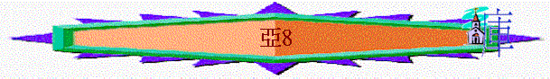

|
耶和華心�媟巨鉹齞� |
|||
|
為選民犯罪而大發烈怒 |
為重建錫安而極其火熱 |
為復興錫安而極其火熱 |
為彌賽亞國而親自成就 |
|
1:2-6 |
1:7-6:15 |
7-8 |
9-14 |
1.第一信息----斥責他們的禁食（7:1-7）
2.第二信息----怒憤他們的惡行（7:8-14）
3.第三信息----應許真神的回歸（8:1-17）
A.神的心情（8:1-2）
「萬軍之耶和華的話臨到我說：「萬軍之耶和華如此說：我為錫安心裡極其火熱，我為他火熱，向他的仇敵發烈怒。」8:1-2
∼以色列人雖剛硬，神仍對他們有一份火熱的心情（火熱的心可譯為嫉妒），祂見仇敵欺壓祂的子民，祂也會發烈怒，而且祂也將會熱心回歸耶路撒冷，復興祂的百姓。
B.神的回歸（8:3-8）
「耶和華如此說：我現在回到錫安，要住在耶路撒冷中．．．．．．」8:3
∼神會親自回到錫安，要住在耶路撒冷中，帶來以色列以下的改變與復興：
a.
聖城的改變
「耶和華如此說：我現在回到錫安，要住在耶路撒冷中。耶路撒冷必稱為誠實的城．．．．．．」8:3
∼從前這裡沒有誠實，但神回歸後，此地方充滿真誠、公義、真理，人也要稱此地為誠實的城！
b.錫安的改變
「．．．．．萬軍之耶和華的山必稱為聖山。」8:3
∼錫安山也因為神的入住，分別出來，成為聖山。
c.民生的改變
「萬軍之耶和華如此說：將來必有年老的男女坐在耶路撒冷街上，因為年紀老邁就手拿柺杖。城中街上必滿有男孩女孩玩耍。萬軍之耶和華如此說：到那日，這事在餘剩的民眼中看為希奇，在我眼中也看為希奇嗎？這是萬軍之耶和華說的。」8:4-6
∼人與人的關係變得和諧，人的生活也充滿安逸與和平。
d.地域的改變
「萬軍之耶和華如此說：我要從東方從西方救回我的民。我要領他們來，使他們住在耶路撒冷中。」8:7
∼選民從被擄的地域中被救出來，遷至神同在的耶路撒冷中
e.關係的改變
「．．．．．．他們要作我的子民，我要作他們的神，都憑誠實和公義。」8:8
∼神與他們建立關係，神作他們的神，他們要作神的子民，而這也是神與他們立的約，能成就此約，因神的信實（誠實）不改變，也因神的公義，因選民已回轉，重拾誠實與公義，神也行公義，施恩賞賜選民，以他們為自己的子民。
C.人的預備（8:9-17）
a.以色列當剛強建聖殿（8:9-13）
(1)剛強的勸勉
「萬軍之耶和華如此說：「當建造萬軍之耶和華的殿，立根基之日的先知所說的話，現在你們聽見，應當手裡強壯。」8:9
∼「當建造萬軍之耶和華的殿，立根基之日的先知所說的話，」是過去式，指從前有先知鼓勵他們建殿，現在他們已開始建殿了，所以仍要手裡強壯，不怕敵人，繼續完成神的工作！
(2)剛強的原因
(A)過往管教的完結
「那日以先，人得不著雇價，牲畜也是如此；且因敵人的緣故，出入之人不得平安，乃因我使眾人互相攻擊。但如今，我待這餘剩的民必不像從前。這是萬軍之耶和華說的。」
8:10-11
∼選民不要再怕敵人而不建殿，因過往神透過敵人管教選民的時代已終結了。
(B)將來福氣的激勵
「因為他們必平安撒種，葡萄樹必結果子，地土必有出產，天也必降甘露。我要使這餘剩的民享受這一切的福。猶大家和以色列家啊，你們從前在列國中怎樣成為可咒詛的；照樣，我要拯救你們，使人稱你們為有福的（或作：使你們叫人得福）。你們不要懼怕，手要強壯。」8:9-13
∼現在神不會再像以前管教他們，反而應許他們，將土產、豐盛加給他們，不再有咒詛，反有祝福，人稱他們為有福的，萬國也因以色列有福，所以選民因神的應許，可不懼怕，繼續作神的工。
b.以色列當和睦且誠實（8:14-17）
「萬軍之耶和華如此說：「你們列祖惹我發怒的時候，我怎樣定意降禍，並不後悔。現在我照樣定意施恩與耶路撒冷和猶大家，你們不要懼怕。你們所當行的是這樣：各人與鄰舍說話誠實，在按至理判斷，使人和睦。誰都不可心裡謀害鄰舍，也不可喜愛起假誓，因為這些事都為我所恨惡。這是耶和華說的。」8:14-17
∼雖然神已往曾定意降禍與列祖，但人不要懼怕，現在當行的是要和睦且誠實生活，不起假誓，不謀害鄰舍。
∼「城門口」為審訊地方
4.第四信息----應許歡樂的日子（8:18-23）
「萬軍之耶和華的話臨到我說：「萬軍之耶和華如此說：四月、五月禁食的日子，七月、十月禁食的日子，必變為猶大家歡喜快樂的日子和歡樂的節期；所以你們要喜愛誠實與和平。」」8:18-19
∼四月記念耶路撒冷被攻破的日子，五月聖殿被毀的日子，七月猶大的領袖基大利殉難日子，十月尼布甲尼撒王首次圍攻耶路撒冷。
∼這些記念的日子原本是應哀傷，但神至終復興錫安，使哀傷的日子變為喜快樂的日子。
A.
選民要喜愛誠實與和平（8:19）
「萬軍之耶和華如此說：四月、五月禁食的日子，七月、十月禁食的日子，必變為猶大家歡喜快樂的日子和歡樂的節期；所以你們要喜愛誠實與和平。」8:19
∼要持續神的恩典，人要守他的本份，要行神眼中看為正的事──要處事對人誠實，按公理審案，也與人和睦，不欺負鄰舍。
C.萬民必尋求耶和華真神（8:20-23）
「萬軍之耶和華如此說：「將來必有列國的人和多城的居民來到。這城的居民必到那城，說：『我們要快去懇求耶和華的恩，尋求萬軍之耶和華；我也要去。』必有列邦的人和強國的民來到耶路撒冷尋求萬軍之耶和華，懇求耶和華的恩。萬軍之耶和華如此說：在那些日子，必有十個人從列國諸族（原文作方言）中出來，拉住一個猶大人的衣襟，說：『我們要與你們同去，因為我們聽見神與你們同在了。』」8:20-23
∼此段可能預言將來彌賽亞來臨作王的日子，萬民也要求以色列庇護，也渴望尋求住在耶路撒冷的神。
∼十人可能指多人或整群外邦人